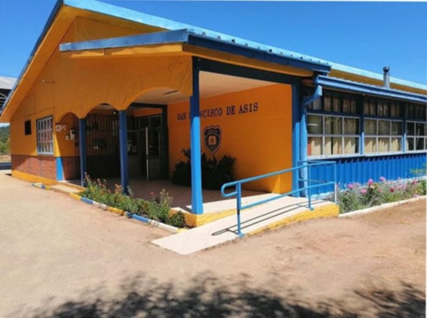
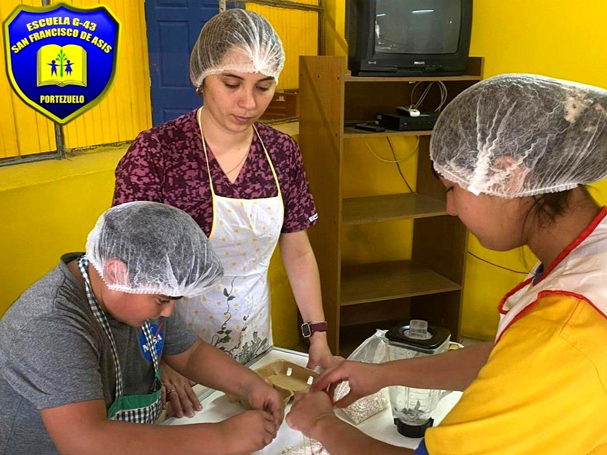
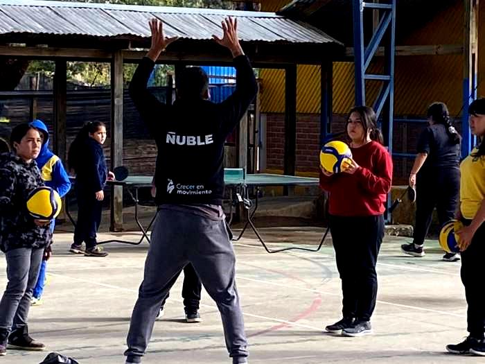
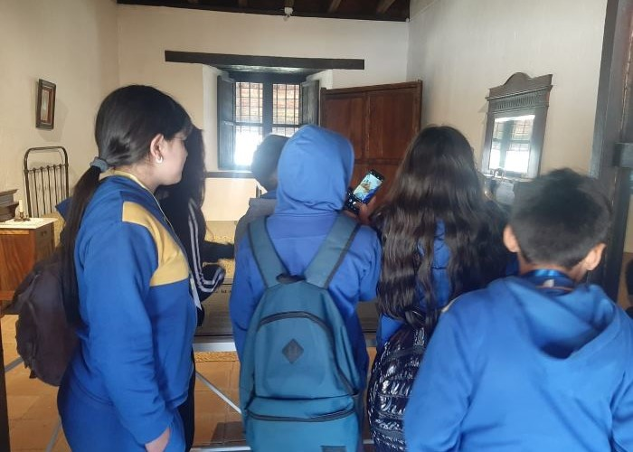

La Unidad Educativa pertenece a la Ilustre Municipalidad de Portezuelo, ubicada a 8 Km de la comuna, en el sector rural llamado San Francisco.
Nuestra escuela consta de un piso con instalaciones amplias, iluminadas y con adecuada ventilación y calefacción (con recursos aportados por la SEP).
La Escuela basa su enseñanza en el currículum nacional (Bases Curriculares y Planes y Programas de Estudio) y brinda atención a la diversidad con un heterogéneo equipo Multiprofesional PIE para favorecer el aprendizaje de todos los alumnos.
Ser una institución Educativa reconocida por desarrollar procesos pedagógicos de calidad, con sólida formación valórica, con altas expectativas de logro y énfasis en el desarrollo de habilidades artísticas-deportivas y hábitos de vida saludable; que permita a los estudiantes responder con éxito a los requerimientos actuales.
Educar estudiantes de manera integral, en un ambiente favorable y contexto valórico, desarrollando competencias en los procesos pedagógicos y artísticos-deportivos, promoviendo hábitos de vida saludable para un buen vivir.



